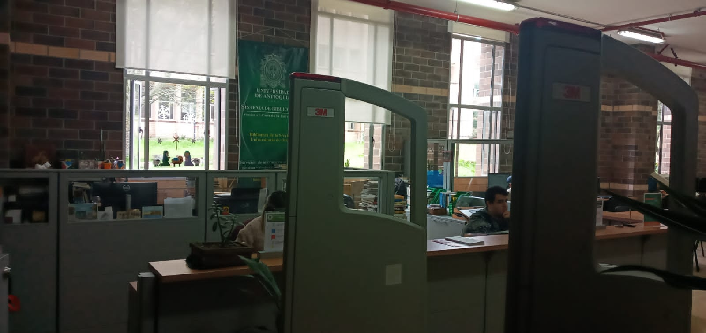

Place
The university have many places such as classrooms, auditorium, computer rooms, laboratories, food area, sports areas, library, etc.

Among the places mentioned, the library is located on the first floor in block one, and it is regularly open from 8 a.m. to 5 p.m. on Monday to Friday. The library is very quiet and silent, also this place for students and teachers to study, research and read.
Also the library is small-medium and it has a single classroom with six shelves and tables, beside the receptionist is helpful for a query. At this place you can find information about multiple books and documents such as areas of administration, health, accounting, law, philosophy, psychology, engineering systems, environmental sanitation, social work, microbiology and bioanalysis.

Also, you can also access the information online where we can use Opac, a database of books and documents, where you can borrow books.